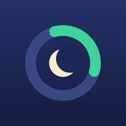

Mes heures creuses vont-elles changer ?
Les heures creuses de millions de foyers évoluent d'ici octobre 2027. Indique tes horaires actuels (ils sont sur ta facture) : la vérification est immédiate, gratuite et faite dans ton navigateur.
Et au quotidien ? Creux te dit si c'est le moment de lancer les machines, calcule le départ différé à régler sur ton lave-linge ou ton lave-vaisselle, te prévient quand les heures creuses commencent et suit les changements de la réforme. Sur iPhone, sans compte, achat unique.
Télécharger CreuxMes heures creuses vont-elles changer ?
La réforme des heures creuses concerne environ 11 millions de foyers entre novembre 2025 et octobre 2027. Si certaines de tes heures creuses tombent entre 7 h et 11 h ou entre 17 h et 21 h, elles devraient changer : ces plages ne pourront plus être creuses. Ton fournisseur doit te prévenir au moins un mois avant.
Que disent les nouvelles règles ?
8 heures creuses par jour, dont au moins 5 d'affilée la nuit entre 23 h et 7 h, jamais pendant les pointes. En été (avril à octobre), au moins 2 heures creuses l'après-midi, entre 11 h et 17 h.
Où trouver mes horaires actuels ?
Sur ta facture d'électricité ou dans ton espace client, à la ligne « heures creuses » de ton option tarifaire.
Et pour lancer les machines au bon moment ?
L'app Creux calcule le départ différé à régler sur ton lave-linge ou ton lave-vaisselle pour que le cycle tourne en heures creuses, t'envoie un rappel quand elles commencent et les affiche dans un widget.
Mes horaires sont-ils envoyés quelque part ?
Non. La vérification se fait dans ton navigateur ; la page ne peut se connecter à aucun serveur.
Creux n'est affilié à aucun fournisseur d'électricité ni au gestionnaire du réseau. Cette vérification donne une indication ; seul ton fournisseur fixe tes nouveaux horaires.
Aussi gratuit : les heures creuses sont-elles rentables pour toi ?